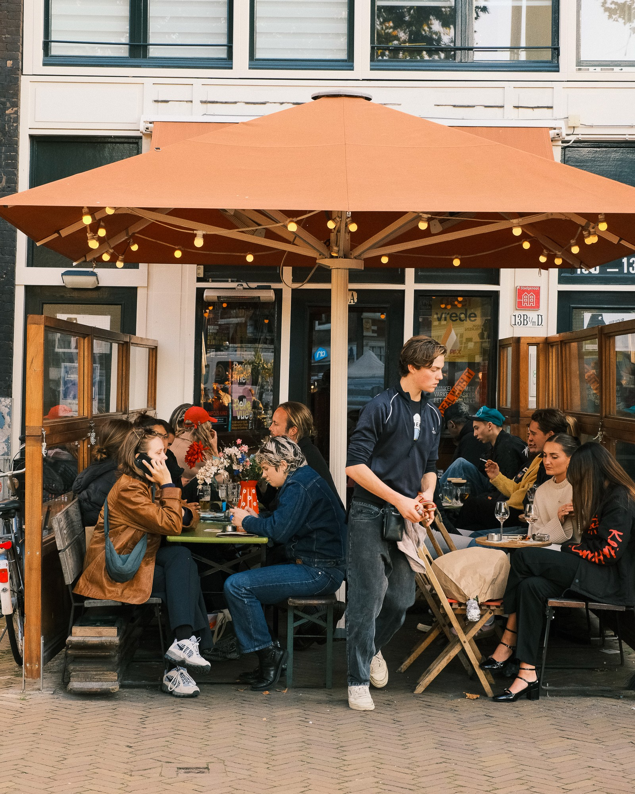
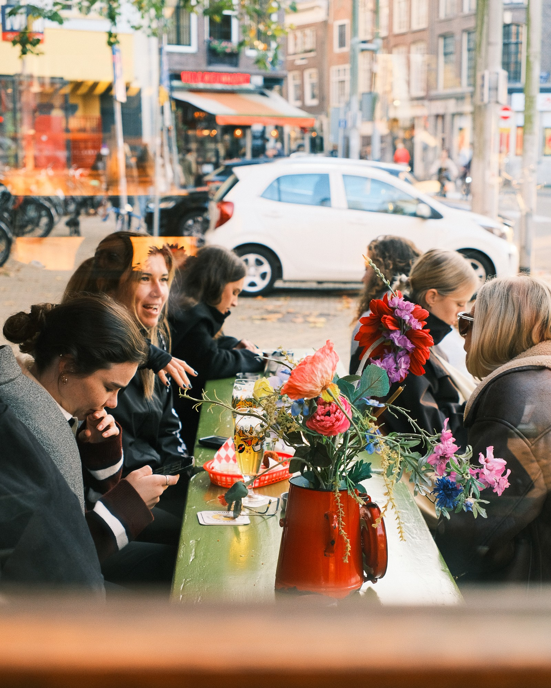
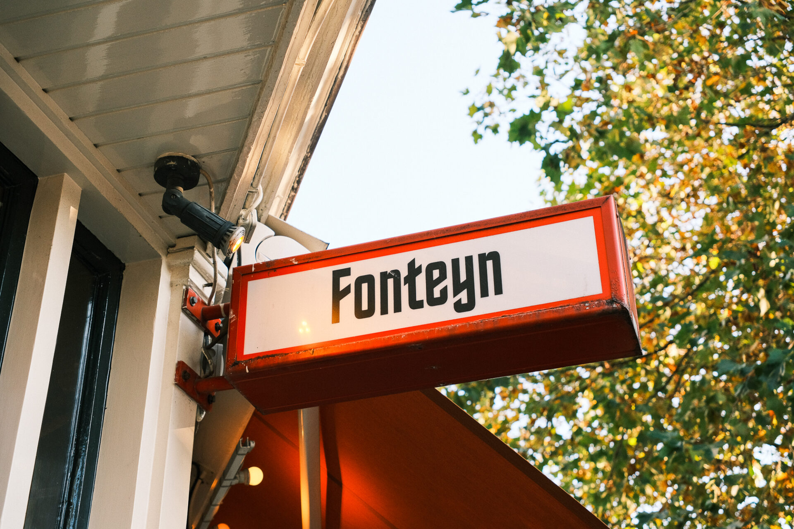
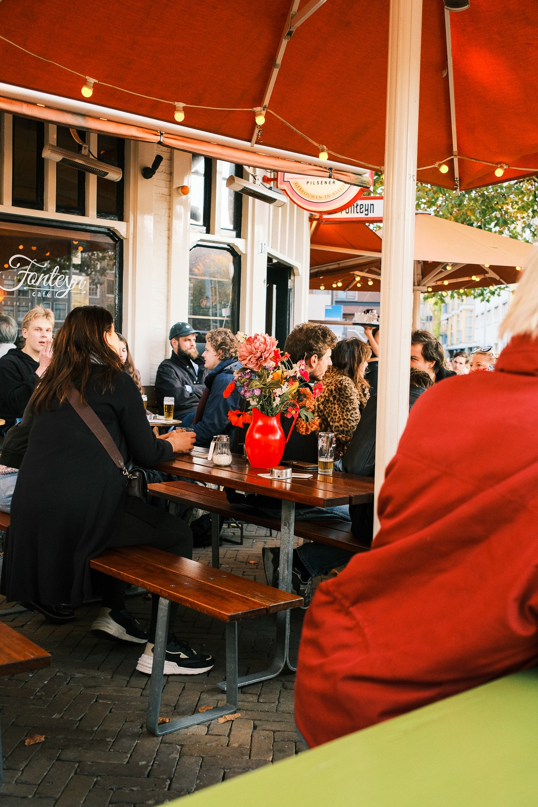
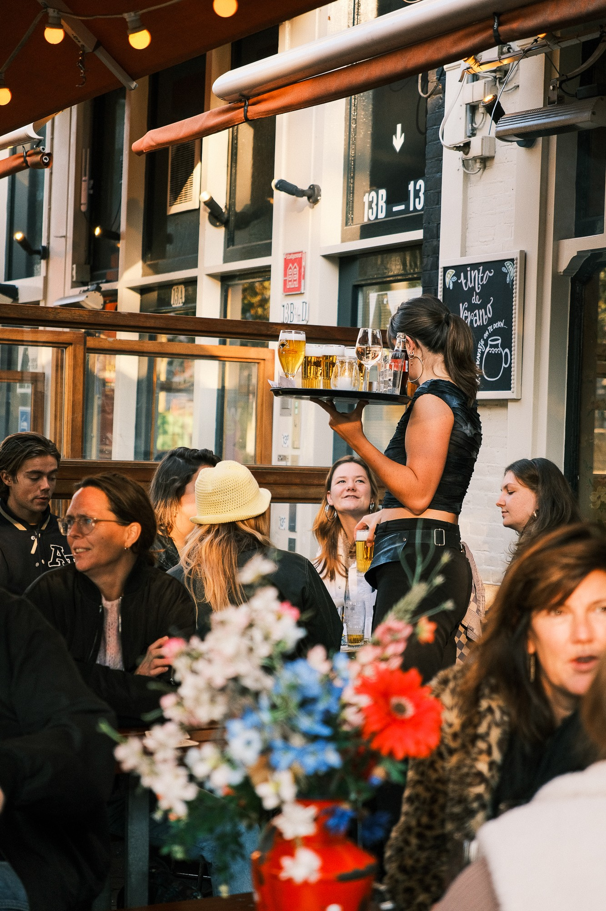

De hele dag zon op de Nieuwmarkt
Broodjes, borrelhapjes en bier van de tap, van open tot sluit. Je hoeft niet te reserveren: kom gewoon aanwaaien.
Zo t/m do 10:00 tot 01:00 · vr en za 10:00 tot 02:00
Op de mooiste hoek aan de Nieuwmarkt
Midden in hartje Amsterdam herken je ons aan de potten met bloemen op tafel, maar vooral aan ons grote verwarmde terras. Daar heb je namelijk de hele dag zon.
We serveren geen diner, maar onze kaart staat bomvol lekkere broodjes en snacks die je van open tot sluit kunt bestellen. Team Fonteyn helpt je graag aan een plekje.
- Groot verwarmd terrasmet de hele dag zon
- Van open tot sluitontbijten, lunchen en snacken
- Niet reserverengewoon aanwaaien

Eten & drinken
Biologische frisdranken, goeie koffie, een grote range aan bieren op tap, fles en blik en een zorgvuldig samengestelde wijnkaart. Broodjes, pita's, soep, taart, flammkuchen en bitterballen: we hebben het allemaal.


Reserveren? Gewoon aanwaaien.
Bij Fonteyn kun je niet reserveren, wel gezellig aanwaaien. Het is bij ons erg charmant en knus, maar daardoor helaas niet zo geschikt voor (grote) groepen.
Kom vooral langs: team Fonteyn helpt je graag aan een plekje, binnen of op het verwarmde terras.
Open & route
Openingstijden
| Zondag t/m donderdag | 10:00 – 01:00 |
|---|---|
| Vrijdag en zaterdag | 10:00 – 02:00 |
Geen diner, wel ontbijt, lunch en snacks van open tot sluit.
Zo kom je er
- Lopen
- Fonteyn ligt op loopafstand van Amsterdam Centraal: tien minuutjes de Zeedijk af richting de Nieuwmarkt.
- Metro
- Alle metro's (behalve de Noord-Zuidlijn) stoppen op halte Nieuwmarkt, de eerste halte na Centraal. Neem uitgang Nieuwmarkt en je loopt zo het terras op.
- Auto
- Parkeren kan bij de OBA, in Q-Park Waterlooplein of langs de smalle grachtjes.

Werken bij Fonteyn
Fonteyn staat bekend als een geweldige plek om te werken: je ontmoet er nieuwe vrienden en het voelt voor velen als een tweede thuis. We werken met leuke mensen, die hard willen werken en daar veel plezier uit halen.
Zin om ons team te versterken? We zijn vaak op zoek naar nieuwe krachten, zéker in het voorjaar. Mail ons of kom gezellig langs om kennis te maken.
Mail werken@cafefonteyn.nl